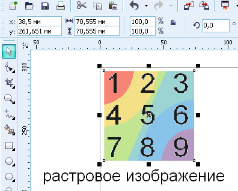
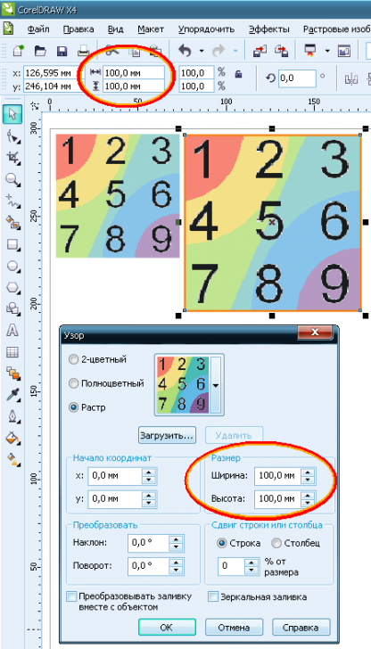
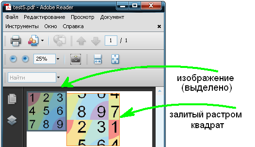
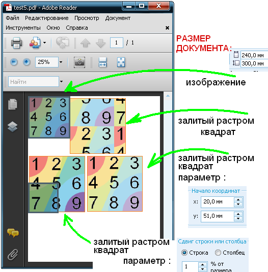

Публикование объектов с растровыми заливками в PDF
Приветствую участников форума
передо мной возникла задача
создать объект (к примеру квадрат)
задать ему заливку растровой картинкой
и опубликовать в PDF
Рис.1 растровая картинка, вставленная в Corel

Рис.2 квадрат с растровой картинкой и параметрами заливки

возникла странная проблема
в файле PDF моя растровая заливка совершенно поехала
версия Adobe Reader 9.4.2
Рис.3 опубликование в PDF и смещение растровой заливки

собственно вопрос
как добиться нормального отображения заливки ?
(ниже - некоторые результаты экспериментов с настройками)
знаю, что в Corel есть функция сложные заливки представлять как изображения
но в силу специфики работы это действие не приемлемо
вставленные изображения можно выделить, как это сделано на Рис.3
объекты с растровой заливкой - не выделяются (во всяком случае у меня, в Reader 9)
галочка напротив "преобразовывать заливку вместе с объектом" конечно на результат не повлияла - заливка едет
есть параметр "сдвиг строки или столбца"
так вот если там поставить ЛЮБОЕ значение - получится странный эффект
заливка не едет, но объект выделяется ЧАСТЯМИ (
четвертями или т.п.)
*если б можно было задать подобное "дробление" не на 4, а на 10 или более частей - это было бы альтернативным решением моей задачи
будет здорово если кому-либо известно как это можно сделать
Рис.4 частичное выделение блока,
с отличным от нуля значением параметра "сдвиг строки или столбца"
условный успех дал подбор значений параметра "начало координат"
но поскольку метод подбора невероятно долгий, а изображений много.... не вариант
Рис.5 "успешный (не)вариант" - нижний правый квадрат

была замечена странная особенность
при изменении размеров исходного документа - изменилось и отображение растровой заливки в PDF
заливки конечно едут, но уже по-другому
Рис.6 объекты и параметры те же, размер документа - другой
"успешный (не)вариант" тоже сполз
выходит, Reader сам решает, откуда ему отсчитывать начало заливки
и ориентируется он на длины сторон документа (а даже не на положение элементов)
если кто то знает в чём тут хитрость
и как обойти подобную "инициативу" Reader-а - призываю поделиться опытом
в любом случае
Спасибо заранее Всем проучаствовавшим
.....впечатляющая активность на форуме.....
проблема решена через обновление с X4 до X5 версии
всем спасибо...
Да не за что, обращайтесь еще ! :)
rare_guest, приносим свои извинения, лето...
Всё в порядке, понимаю )